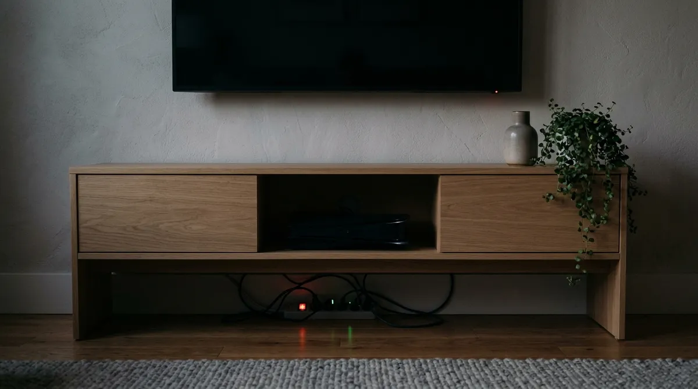

Standby-forbrug: hvad koster det om året?
Nye apparater bruger næsten ingenting på standby. De gamle kan til gengæld koste flere hundrede kroner om året. Her kan du se, hvad der er værd at slukke for.
Emil Rostgaard Clausen, stifter og redaktør

Det korte svar: Et nyere apparat må højst bruge 0,5 watt på standby. Det giver 4,4 kWh og ca. 12 kr. om året. Apparater fra før 2012 kan tilsammen bruge op til 175 kWh om året på standby. Det svarer til ca. 473 kr.
Hvad koster 1 watt på standby?
Et apparat, der står tændt hele døgnet, er tændt 8.760 timer om året. Derfor bliver selv få watt til en del kWh.
| Standby-forbrug | kWh om året | Pris om året |
|---|---|---|
| 0,5 watt (krav til nye apparater) | 4,4 | 12 kr. |
| 1 watt (nye apparater med display) | 8,8 | 24 kr. |
| 5 watt | 43,8 | 118 kr. |
| 10 watt (ældre udstyr) | 87,6 | 237 kr. |
Vi regner med 2,70 kr. pr. kWh i alt, inkl. nettarif, afgifter og moms. Det ligger mellem vores beregning for Vestdanmark (2,64 kr.) og Østdanmark (2,85 kr.) pr. 20. november 2026. Se hvad en kWh koster hos dig.
Tommelfingerregel: 1 watt hele året koster ca. 24 kr.
Nye apparater er ikke problemet
Nyere apparater må højst bruge 0,5 watt på standby, eller 1 watt hvis de har et display. Ifølge Bolius er det især apparater fra før 2012, der sluger strøm. De kan tilsammen bruge op til 175 kWh om året.
Det er altså ikke opladeren til telefonen, du skal jagte. Kig i stedet på ældre tv, musikanlæg, spillekonsoller, printere og computerudstyr.
De skjulte strømslugere er værre end standby
Nogle ting er ikke på standby, men bare tændt hele tiden. De koster langt mere:
| Apparat | kWh om året | Pris om året |
|---|---|---|
| Håndklædetørrer på 120 watt | 1.050 | 2.835 kr. |
| Gammel cirkulationspumpe (før 1995) | 482 | 1.301 kr. |
| Ny cirkulationspumpe | 120 | 324 kr. |
| Gammel kummefryser, 400 liter | 334 | 902 kr. |
En håndklædetørrer, der kun er tændt 4 timer om dagen, bruger en sjettedel. Et tænd/sluk-ur til under 50 kr. er hurtigt tjent hjem.
Sådan finder du dit eget standby-forbrug
- Lån eller køb en elmåler til stikkontakten. Den viser, hvad hvert apparat bruger.
- Tjek dit forbrug om natten på eloverblik.dk. Det forbrug, du har kl. 3 om natten, er dit grundforbrug.
- Saml tv, lyd og spillekonsol på en skinne med afbryder.
Se også, hvad der er normalt for din bolig, i vores guide til elforbrug.
Beregn selv
Skriv dine egne tal, så regner vi prisen ud.
Den nemmeste besparelse er ofte selve elaftalen. Der er over 1.300 kr. om året til forskel på den billigste og den dyreste elaftale ved et forbrug på 4.000 kWh. Se det billigste elselskab lige nu, eller få regnet din egen besparelse ud.
Spørgsmål og svar
Bruger en oplader strøm, når den sidder i stikkontakten?
Ja, men meget lidt. En nyere oplader bruger typisk under 0,5 watt uden telefon i. Det er under 12 kr. om året.
Hvor meget kan jeg spare ved at slukke helt?
Har du mange ældre apparater, kan du spare op til 175 kWh om året, ca. 473 kr. Har du kun nyere apparater, er besparelsen lille.
Skal jeg slukke routeren om natten?
En router bruger typisk 5–10 watt. Det giver en lille besparelse, men mange apparater i hjemmet henter opdateringer om natten. Start med de ting, du ikke bruger.
Kilder
- Bolius: Her er 10 store strømslugere i dit hjem (standby-forbrug og årligt forbrug for apparater)
Priserne er regnet 21. november 2026 og ændrer sig med elprisen. Tallene for forbrug kommer fra kilderne ovenfor.